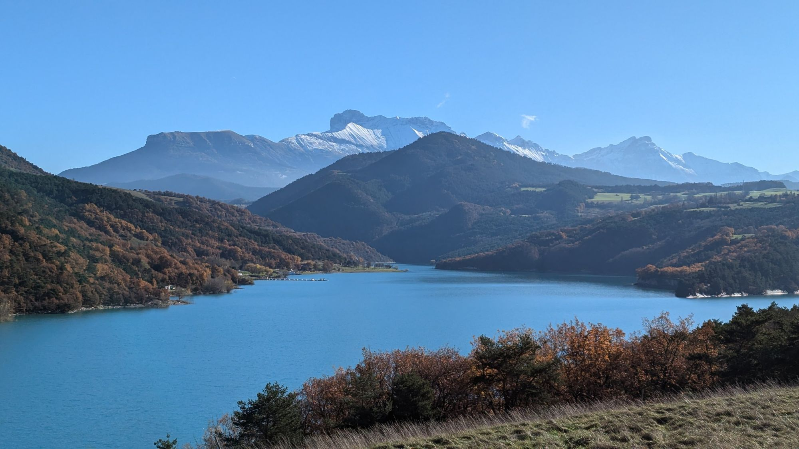

A retreat in a château all to yourselves.
Yoga, meditation, writing, a sports camp or an artist residency: no other guests, a practice room facing the lake, and meals at the times you choose.
Check your datesOne price per person, so you can set yours
You run the retreat and set your own rate. We give you one all-inclusive figure per person per night: bedroom, meals, practice room. As the château is reserved for you alone, we bill for a minimum of 16 people.
All-inclusive retreat
- Shared roomfrom €120 per person per nightBedroom, three meals, practice room with open access.
- Single roomfrom €155 per person per nightSame, in a room of your own.
- Minimumbilled for 16The château stays reserved for your group, whatever its size.
- Residencies and festivalson requestWritten terms from the very first exchange: spaces, hours, sound, accommodation.
What you’ll find here
- No other guests during your retreatThe château is booked for your group alone.
- A practice room open from 6 am to 10 pm60 m², old parquet floor, lake view. Mats, cushions and heating provided.
- Meals when you want themA vegetarian option at every meal, special diets on request.
- A discreet teamThere at mealtimes and when you call. Invisible the rest of the time.


Residencies, collectives, festivals
Space, freedom, simple accommodation. The 220 m² vaulted cellars host performances, concerts and late nights; the three drawing rooms become studios.
The rules are clear and in writing, so there is nothing to negotiate once you are here.
See all the spacesQuestions retreat leaders ask
Which diets can you cater for?
Vegetarian, vegan and gluten-free. There is a vegetarian option at every meal.
Can the group cook for itself?
For some meals, yes. The shared kitchen isn’t designed for large groups, so we ask you to take most meals with us.
Is there a sound system?
No, bring your own. The practice room is yours from 6 am to 10 pm.
Are pets allowed?
Yes, they are welcome.
Planning a retreat?
Send us your dates and group size. We’ll tell you the same day whether the château is free.